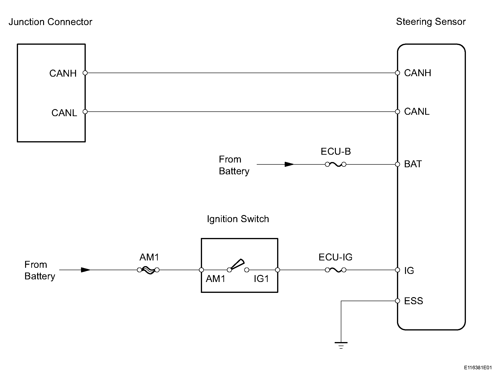

Home
>>
Scion
>>
2006
>>
xB Standard
>>
Repair and Diagnosis (Single Page)
>>
Accessories & Equipment
>>
Communication Devices
>>
Can Communication
>>
Steering Angle Sensor Communication Stop Mode
>>
Wiring Diagram
Steering Angle Sensor Communication Stop Mode: Wiring Diagram
Fig 1: Steering Angle Sensor Communication Stop Mode - Wiring Diagram

Courtesy of © TOYOTA, LICENSE AGREEMENT TMS1002